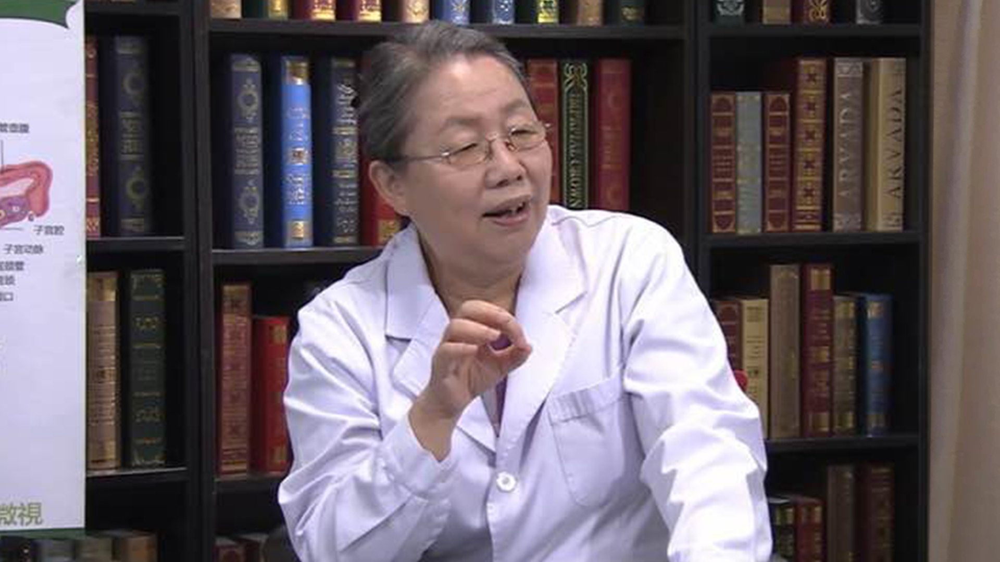

1.54 卵巢早衰¶
何方方 主任医师¶

北京协和医院生殖中心创始人 主任医师 硕士研究生导师；
新加坡国立大学临床胚胎学硕士；曾任中华医学会生殖医学分会第二 三 四届常委；中华医学会生殖医学分会临床学组第一届常务副组长；北京医学会生殖医学分会第一届副主任委员。
主要成就： 筹建了协和医院辅助生育中心并获协和医院首例试管婴儿妊娠成功，填补了协和医院在辅助生育领域的空白。
专业特长： 擅长妇科内分泌相关疾病的诊治，如异常子宫出血、闭经、高泌乳素血症、多囊卵巢综合征、绝经期综合征及相关疾病等，尤其对于不孕症的诊断处理及促排卵治疗、辅助生殖技术(试管婴儿)积累了丰富的临床经验。
卵巢早衰是怎么回事？¶
(采访)首先就是想请您说一下卵巢早衰它到底是怎么一回事？
我想要说明卵巢早衰是怎么回事，那么我们先要先解释一下卵巢是怎么回事。
我们来看这张图，这是女性的这个生殖器官，这是子宫，这是阴道，这是输卵管，输卵管的下方，一边一个这个紫的就是卵巢。
在女性这个胎儿，在母亲肚子里怀孕的这过程中，大概在怀孕20周左右，那么这个卵巢里头这个卵，大概是能够存了大概700万-800万个这个卵，那么到了出生的时候，它就会消减到大概100万-200万，到青春期的时候，这卵巢的卵大概剩了30万左右。
那么在青春期以后，那随着每个月都能来月经的话，那么它在来月经的过程之中，每次它都会消耗一批的卵，虽然咱每个月排一个，排一个，我们到50岁，大概30多年能够排到400到500个卵，但是它在每次虽然只排一个卵，但是它有一批卵跟它陪绑，也就是说在一起发育起来的过程之中，在不同的阶段它就开始凋亡，那就只有一个卵最后成熟了排出来。
所以也就是说这个卵巢里这个仓库里的东西，实际上是有数的，就是说你出生以后有多少，这实际上是有数的，那么在每个月的消耗，消耗过程之中，那么是越来越少的，所以也就是仓库里头东西越拿越少越拿越少，最后拿没了，那就叫绝经了。
那么在一般正常情况下它这个里头卵能够维持到大概50岁左右，这个女性从十几岁来月经，对吧，初潮到50岁左右，那大概有30多年时间，一般它能够维持到这个50岁左右，所以在40岁以后，在50岁左右绝经的话，那这算一个正常的状态，那么如果说她在40岁以前绝经了，那么这个就叫卵巢早衰，就这40岁是一个坎，这个坎其实是人为定的，超过40岁就算一个正常，那么没到40岁，她绝经了，就叫卵巢早衰，所以这个就是卵巢早衰的这个定义。
(采访）主任，现在卵巢早衰的发生率高吗？
其实不高，就是一般来讲大概是千分之一到万分之一的样子，但是现在好像大家都比较关注这个事情，当然也可能跟这个生育年龄的延后，生育的时间的延后，还有就是所谓大龄生孩子的增加，所以就显得好像那个卵巢早衰的发生率好像在增加，其实发生的几率在人群中，它实际应该是不高的。
引起卵巢早衰的原因有哪些？¶
（采访）卵巢早衰的原因可能是哪一些呢？
有哪些东西可能会影响到它的这个卵巢发生这个提前绝经？
那也许有一些可能比如说这个卵巢它有些受体的作用，也许受体不起作用了，或者一些其它的原因导致的她这个卵巢不反应了，对吧，这是一个。
那么还有一些就是说比如像手术，卵巢的这个手术，比如巧克力囊肿剔除手术，尽管手术中它会特别小心，但是它总还是会伤到一些这个卵巢的。
那么还有比如说血液病或者红斑狼疮这些需要用药物，化疗的药物，它去那个治疗这些病的过程之中，那么它有可能也会伤到卵巢，那还有一些比如说肿瘤，得了肿瘤的病人她去化疗放疗等等，它也有可能会伤到这些卵巢。
那么当然这是一些可能找到的因素，但是90%多的人都找不到因素，找不到原因，就说我们不知道你出生的时候，你妈给了你多少（卵子）对吧，我们也没法统计说你每个月耗掉了多少（卵子），所以这个事都是未知数，所以我们不知道你为什么最后你没有到50岁，40岁以前就绝经了，所以这也就是说大概90%以上是找不到原因的。
（采访）主任那我还听说就是有的母亲，可能是绝经比较早，她的孩子可能也会有这样的一个情况，那么也就是说这个卵巢早衰会不会和遗传也会有一定的因素。
可能有一定因素，但也不是绝对的，有些说可能跟遗传有一些关系。
（采访）可能会有一些关系。
可能，对对对。
（采访）刚才您提到了，有一些手术可能会损伤到这个卵巢，那么像有些女孩子不注重身体，有时候会做这个人流，如果说做了多次人流手术的话，会不会对卵巢造成损害，从而造成卵巢的早衰。
人流不会的，这是子宫，对吧，那么一般怀孕是这个怀在子宫里头对吧，那我们所谓做人流，我们是通过阴道，用那个吸管，然后就把那个妊娠的这个囊给吸出来，所以实际上卵巢在腹腔里头在外边在子宫外边，所以我们在做人流的时候我们只吸到那个宫腔里头，那个妊娠囊的话是不会伤到卵巢的，所以人工流产的手术可能会伤到子宫内膜，但是应该是不影响卵巢功能的。
（采访）你刚才一说我就明白了，这两个位置就不一样。
对，这两个位置不一样，一个在外头这一个在子宫里头，所以它一般这人流它是碰不到这个子宫外边的卵巢的，但是我刚才说卵巢的手术比如说这卵巢长了一个巧囊，那它这个巧囊是长在卵巢里头的，那么我们要做手术的时候我们就要把这个巧囊从这个卵巢里头剥出来，那这在这剥的过程中它就可能虽然说这卵巢有个皮，就囊肿有个皮，但是你把这皮剥下来时候，它也会伤到周边的这些卵的这个卵巢组织，所以它也可能影响到这个卵巢的这个功能。
卵巢早衰的早期信号有哪些？该如何确诊？¶
（采访）出现了哪些症状，咱们就警惕卵巢早衰的发生了，会不会有一些信号？
最早出现的这个信号，应该是月经问题。正常情况下这女性的月经周期是25天到35天，那么经期大概是2到7天。
那么如果说这个月经周期的周期出现了变化，就是比如说她的这个周期延长了或缩短了超过原来的这个7天以上，比如说她原来是30天来一次，那么她后来缩短了缩短到22天23天来一次了，超过7天以上了，那么有这么两次以上那么就要警惕她可能是月经开始不正常了，这是一个。
当然就是说我们诊断卵巢早衰的话，我们一般指40岁以前至少是有四个月没来月经，那么FSH，我们所说的FSH就叫做促卵泡生成素，那这个激素是垂体分泌来促进这个卵泡的发育的，那么这个激素升高了大于40mIU/ml了，那么这种状况我们就从临床上诊断就叫卵巢早衰。
其实她最早应该先出现的是月经问题，一般来讲女性往往这个轴正常的话，她月经是应该正常的，那么往往这轴不正常了往往就会先出现的症状就是月经不好，那么伴随而来的可能会有一些雌激素波动的下降的一些症状。
比如说潮热出汗什么的，当然这个好像从我个人临床感觉，好像更年期的病人会比较明显，但是真正年轻的病人好像还少一些，主诉在这方面还少一些，也可能年轻人大概她大概不太重视这方面，所以来主诉说这个症状的少，但是她往往先说她的月经不正常，这是最主要的一个症状。
（采访）这是非常明显的一个信号。
对。
卵巢早衰的患者可能会出现哪些典型症状？¶
卵巢早衰它实际上是这样，我们叫原发性卵巢功能不全，它指的是一个过程，就是说本来这卵巢功能是正常的，所以月经周期也是正常的。
那么随着到了一定的年头，它里头耗的那个卵剩的少了以后，那么它就开始下降了，那这下降的过程就是它是一个波动的一个下降，从开始不好到开始波动下降，到最后全耗完了，就到一个就绝经了这种状态了。
这个实际上它是一个过程，那么在这个过程可能有一段时间，这段时间有的人可能三年五年，也有人十年八年这都说不准的事。
那么在这个过程之中她可能就是一个是说她随着这个雌激素的这个下降，那么她的月经可能会越来越不好，开始可能还会月经周期缩短，后边逐渐逐渐延长到最后可能就不来月经了，所以刚才讲四个月以上就不来了，那么这个就是到后边不来月经了。
那么另外的那个症状就是她因为在雌激素波动这个下降这状态，所以她可能就会典型的，所谓更年期的症状就是潮热出汗，所谓潮热就是呼一下子就觉得从这开始唔就热起来了，就跟你说着说着话。唔看着看着病人就起来了，然后就满脸通红，然后大汗淋漓的，也有的人跟我说就是她睡醒了觉以后，她那个被子都是的湿的，就夜里头。
（采访）这么严重。
对，所以她就很难受，所以像这种情况下，就会影响到她的生活，影响到她的休息，那当然轻的也就是稍微好像有一点出汗，那这个是轻的，也无所谓，但是每个人的症状可能是不太一样的。
那么还有就是说她在这个雌激素随着下降过程之中，还有是骨密度是丢失的会加快，骨量丢失加快，那骨量丢失加快，比如说大家都怕老年人摔跟头，就摔跟头，一会那个就是突然不小心骨折了，那年轻人摔一下可能没事爬起来掸掸土就完了，但是老年人可能就会出现问题。
她为什么会出现这些问题？
就是她的骨质疏松了，骨量丢失加快，随着这雌激素的这个下降，她的骨量的丢失加快，骨量丢失加快所以就会出现这些骨质疏松这个状况。
早衰的病人就是说在40岁以前，我们曾经统计过就40岁以前月经不好闭经的这些人，她雌激素低的，她和那个月经正常的这些人比的话，她的骨密度都是低的，所以也就是说早衰这些病人，她还是要重视这些问题的。
当然还有一些其它的症状，比如说雌激素低了以后，像这个有些老年人反复泌尿系感染，或者老年性的阴道炎，就是泌尿生殖道不舒服这些症状，那么她也会经常也会出现，反复的出现，所以这些可能都是跟雌激素低这个有关系。
卵巢早衰需要与哪些疾病区分开？¶
因为不是说所有闭经的病人，所有月经不调的病人，她都是属于卵巢早衰。比如说就现在常说的多囊卵巢综合征，她也会表现月经不好，她也会表现闭经。
那么还有一些人比如说那个下丘脑垂体性闭经的人，那么也会表现她就不来月经，也是闭经。所以同样都是闭经的话，不见得都是卵巢早衰，所以我们要去鉴别。
那鉴别的一般来讲，我们就是要查这个激素，性激素六项，这里头要体现卵巢储备功能，主要是FSH，这个FSH它是促卵泡的生成素。
那么如果说在这个卵巢本身有问题的话，那么她的FSH是升高的，那么如果说她是那个多囊卵巢综合征的这些病人，那么她的FSH可能是正常的，但是如果说她是低促性腺激素的。
比如说她的那个（闭经）属于下丘脑垂体性的，那么那种情况下，那么她的FSH是低的，正常情况下FSH在10mIU/ml以下，那么如果到了40mIU/ml以上,就是到绝经的这个状态，所以10-40mIU/ml之间大概就是一个波动下降的一个过程，所以这个FSH的这个水平，其实标志了一个卵巢的这个储备的功能。
那么还有一个就是我们现在还有就是AMH叫抗苗勒氏管抑制因子，那么这个AMH它也是一个体现卵巢储备功能的。
它和FSH有个区别，FSH是我们是在月经期查的，那么它反映的是在月经期看到的那些小卵泡，就小卵泡能看到能B超下能够看见的那些小卵泡的这个水平。那么AMH就是抗苗勒氏管抑制因子它反映的是小卵泡之前的还看不见的更小的这个卵的它的这个储备功能。
（采访）更精细。
对对，它会发现的更早一些。
什么是性激素六项？什么时候抽血检查比较合适？¶
（采访）主任，其实现在说起这个激素六项检查很多人都听说过或者都做过，但是具体这六项是哪六项，我想没有几个人能说出来，您能不能告诉我们到底是哪六项，这六项分别具有什么样的意义？
对，那这个六项就是从英文来讲，一个FSH是吧，它是指的是促卵泡生成素，还有一个就是LH，LH是促黄体生成素，这个FSH（促卵泡生成素）和LH（促黄体生成素）它一般都是由垂体来分泌的。
我们所说的生殖内分泌轴，上面是有大脑，大脑-下丘脑-垂体-卵巢-子宫，这是子宫是最下边的这一部分了，这是一个轴，这个轴它是一级管一级，一级压一级，下丘脑命令你垂体去干什么，垂体再去命令卵巢就干什么，下丘脑命令垂体分泌的就是这个FSH（促卵泡生成素），这个FSH它是促卵泡生成的，所以它就去命令卵巢里的这个卵去发育起来。
随着这个卵泡的长大，周边有一些颗粒细胞等等，它这些就分泌雌激素，雌激素上升到一定的高度以后，它就会又去反馈给领导，说我这雌激素过高了，这个垂体它就来分泌，又分为一个LH就促黄体生成素。
有了这个黄体生成素以后，然后它的这个卵巢，就那长大那卵就排出来了，排出来以后，这个卵巢里头它又形成了这个我们叫黄体，黄体它又分泌雌激素和孕激素，这是这就说到了四项激素了。
其中还有两项，就一项是雄激素，还有一项是泌乳素，泌乳素它也是应该是垂体来分泌的，所以垂体实际上分泌了三种激素，卵巢分泌了三种激素，雌激素、孕激素和雄激素，这实际上六种激素是两个地方来分泌的。
我们要看卵巢的这个功能的话，我们主要要看的就是这个FSH（促卵泡生成素），LH（促黄体生成素）和雌激素，常常会有医生嘱咐你是月经2-4天来抽血，那主要是要看她基础的这个水平FSH（促卵泡生成素）、LH（促黄体生成素）和雌激素怎么样，如果FSH（促卵泡生成素）升高了，雌激素降低了，那就反应是卵巢的这个功能不好。
孕激素，说孕激素是什么？是排卵以后才分泌的，所以在早卵泡期你测那个孕激素它本来就低了，它因为她还没有排卵。
如果你要了解这个人有没有排卵的话，她一般是在这，也就是说是在排卵以后的一个星期或者如果这个人月经周期长的话，下次月经前一个礼拜来抽个孕激素来证明她有没有排卵，其实就是说反映的是不一样，所以抽血的这个时间其实也不是固定的，就是看你要解决什么问题。
泌乳素和雄激素这个是在就在月经过程之中它的变化不太大，所以它在什么时候抽都行。所以比如说你要想查她那个有些高泌乳血症的病人，本来泌乳素高的用了药以后，看它这降下来没降下来，这个时候其实不一定非得到月经期抽，它什么时候抽都行。
那有时候比如说雄激素高的脸上痤疮的这些人，她用了这些降雄激素的药物以后，她是不是见好了，这个查雄激素也不一定非得在月经的第二天来抽，那也可以在其它时间抽都可以，就是它这个是跟它的周期变化不太大。
但如果你要想反映这个卵巢的这个储备功能的话，一般都是在月经早期我们要看基础的FSH、LH和雌激素的水平来说明她卵巢功能好不好。
（采访）您这样说我终于知道了这个传说中以前我觉得很神秘的激素六项到底是什么，并且各自都代表哪些意义。
对对，也有的人觉得这个一查激素六项啥事都解决了，但是其实也不一定，就像那个常常有病人拿这个激素六项来跟我说，说你看我们这大夫说我没排卵，我说你这什么时候抽的血，她说那个我是月经期抽的血，你看我的孕酮低，我就代表我没有排卵。
再后来我跟她讲这个时候她本来就不排卵，所以说本来孕酮就是低的，这个时候如果孕酮高了还是有问题的，那我刚才说讲要查有没有排卵，那我在月经下次月经前，因为得排卵以后才有孕激素，你才能看她有没有排卵。
还有就是有些人比如说月经第二天抽血，那说查我雌激素低了，月经怎么来的？
它实际雌激素的作用，它让子宫内膜长起来，先让子宫内膜长起来长厚了以后，然后这再有孕激素作用让内膜变成更加松软，然后雌激素孕激素下降了才来月经了。
也就是说如果你有月经的话，那这个人雌激素肯定不会是低的，她如果雌激素低的话，她的内膜是长不起来的。她就不会出血了，所以这是逻辑问题。
她如果这个人有排卵，她排卵前提她得先有一定的雌激素水平，雌激素上升到一定的高度以上，这个垂体才能命令LH（黄体生成素）分泌，然后才能排卵。所以你反过来讲你有了排卵你雌激素也不会低的。
所以不能光看一个数字，说早卵泡期查雌激素低了，说唉呀我就雌激素低了，就开始补充雌激素，那其实是没有必要的。
卵巢早衰该如何治疗？吃药副作用大吗？¶
卵巢早衰是这样，就是说因为我们从根本上来改变这个卵巢功能是做不到的，再说白了就是地球总是往前转的，咱不能转回去，所以也就是想逆转是做不到的，这是医生不是神仙，所以也是做不到的，我们怎么办。
我们怎么来预防后边那些事儿？比如说预防那些症状，改善症状，丢失减少等等，我们就需要补充雌激素和孕激素。因为她卵巢功能下降，她主要是不能分泌雌激素和孕激素了，我们不能改变她的卵巢功能怎么办？我们只能替它来工作。它罢工了，我找一拨人来替它工作。那我们找的人是什么？就是雌激素和孕激素。
补充了雌激素以后，那至少就可以让它维持这个女性的基本的这个生理的功能，女性体内很多地方它都有雌激素的这个受体，包括这个这血管脑子了等等。还有那个子宫、卵巢、乳房、全身骨头，各处都有，她缺乏这些雌激素以后，她可能都会造成一定的影响。
我们补充雌激素主要是为了来维持这些女性的基本的这个生理的功能，减少她的症状，让她能够比较舒服一些，另外就是减少她后边的骨量的丢失或者心血管一些问题和脑子的一些问题等等，那这是我们的目的。
所以这些卵巢早衰的病人，我们都是主张要补充雌激素和孕激素，国际绝经学会建议至少要补到50岁，至少要补到人家正常绝经的这个状态，所以这是一个长期的一个治疗过程。但这个过程往往病人会觉得一听激素，往往谈激素色变，这激素有没有副作用？会不会发胖？会不会长癌？这些都是病人的这个顾虑。所以这也是说为什么有好多人一听这个雌激素不吃。
如果说这在这个吃药过程它的正作用和副作用相比的话，我们是一个权衡利弊的过程，那如果弊大于利，那这个药肯定不能吃，但如果利大于弊，这个药是应该可以吃了，所以在这个激素补充治疗来讲应该说是利大于弊，特别是对于那些早就（卵巢）早衰的病人，那她更需要来补充雌激素和孕激素。
卵巢早衰的患者在日常生活中需要注意哪些事？¶
一个就是心态，心态就是你要正视现实哈，不要就有的人老觉得我怎么倒霉，然后我怎么就这样了，其实就说这个谁得什么病谁知道，那你觉得你倒霉，比你倒霉的人还有得是，你怎么不去跟那些人去比一比。
所以我就要正式谁得什么病谁都不幸的，但是这个病相比之下还是比较好的，因为它不影响吃不影响喝，其实也不影响寿命，当然就是说可能就是你只是需要补充一些激素来改变你，就维持这些女性特征，维持你的身体健康就可以了，这是一个。
还有一个就是适当要锻炼身体，其实锻炼身体一个是增加一个骨量的问题，骨密度，对这身体有一些好处，另外当然你锻炼身体，对睡眠调节这些可能都会有好处，对生长激素都还是有好处的，因为女性的年龄大了，她的这个生长激素其实也是分泌减少的，所以锻炼身体还是很重要的。
至于吃什么？
常常有人说喝豆浆，我就是还有人说吃黑豆，还有人数说多少颗黑豆，就往上说的特别多，但是我觉得其实这个里头含的雌激素量是真的是很小，所以我就老说你喝豆浆喝多少，你能成桶的喝吗？就你喝一杯豆浆能起到什么作用，其实远远不行，还不如就补那一片雌激素管用。
所以像说的这些东西，其实都是就是病人在传，当然你说豆制品里头是不是含有雌激素它也含有一些，也不能说绝对没有，但是它的含量其实很低的。
当然你多吃点豆制品也没什么坏处，但是也抵不了就是说你补充一毫克两毫克的这个雌激素管用，所以我觉得最主要的吧，就是说你这个治疗里头还是应该正视这个现实，还是应该听医嘱医生的，该吃什么吃什么，该补什么补什么，这是最重要的。
治疗卵巢早衰，应如何正确补充雌激素？¶
是这样，就是说我们激素的补充大概有两种方法。
其实一种方法，就是按照月经周期，也就是我们正常的月经周期是前半期是雌激素，雌激素作用，然后排卵以后这个后半期是雌激素加孕激素，然后这个雌性激素脱落就减少了，那内膜脱落了，就子宫内膜脱落就来月经了，这是一个正常月经周期，我们补充雌激素就是一个是模拟这个正常的月经周期。
有一些药物就是这么配比的，就是它的配好了的，前半期雌激素后半期雌激素加孕激素，那这个就比较方便，你服起来就会比较简单，你就每天按照这个说明书这一天一片把这一盒吃完，停药。她就会来月经了。
还有一些药就是单纯的就是雌激素和孕激素，那你自己去配，比如说我吃多少天的，二十几天的雌激素，然后比如说21天雌激素，后十天我再加十天的孕激素，那你这个也可以，那这个就相对麻烦一点，你要自己去算好了时间再去吃，就相对麻烦一点。
就是按照就是正常的模拟这个月经周期的这个吃法，所以也就叫人工周期，人工周期就是模拟它自然周期的这个激素水平的改变。
（采访）那这个的话还是要在医生的指导下遵医嘱来服用，不能自己开了之后自己想怎么吃怎么吃。
对对对，还有定期的做一些相关的检查，因为比如查体包括这些肝肾功能血脂，还有就是B超，乳腺、盆腔、子宫内膜，这些相应的一些检查，一般基本上大概一年两年得做一次，就是基本上大概单位每年查的也差不多都包括在里头了，如果要没有什么问题就可以一直吃。
补充雌激素的禁忌症有哪些？¶
你要说禁忌症确实有，比如说肿瘤、乳腺癌，咱说乳腺癌，那乳腺癌的病人她因为她这个可能跟激素有关系的，你再补充雌激素的话，可能会对这个乳腺癌是否有所影响。
当然这里头其实也还在研究到底乳腺癌的病人吃了雌激素以后是不是影响到复发什么，或者说是不是至少会不会增加她的复发率，其实这个目前其实也还没有一个定论，但是因为她毕竟她那些肿瘤是跟激素有关系的，所以最好是不去服用，这是一些。
当然还有比如说，说肝功不正常什么这些，那这些口服药都是通过肝脏排泄的，当然你也可以改可以吃一些比如外头不口服的，比如说贴的抹的，通过皮肤吸收的，它不通过肝脏，那也可以。
但是还有一些不明原因的出血你还没弄明白咋回事，那就最好先别吃，先把它弄清楚了再说。
这些那当然也有一些，比如说像那个子宫肌瘤，子宫肌瘤有人说子宫肌瘤也跟雌激素有关系，所以是不是可以就是说敢不敢吃，能不能吃。
但是对于子宫肌瘤来讲其实小的话是可以吃的。
就是因为其实你在咱们这么说，就你如果这个月经正常的这个人她的体内的雌激素水平高的时候能达到200到300pg，我们补充那点雌激素，吃那点雌激素也就是二三十，四五十，所以其实离的正常月经正常那个体内雌激素低得多。所以一般来讲它是不至于到刺激肌瘤长大的这个份上。
但是你要每年检查，如果它长大了，她可能有其它问题，那可能再考虑做手术，多数人可能还是会萎缩的，所以一般也不会就不会长大。
所以好多就像类似这些问题还要去找医生看，所以我们在吃药过程之中基本上每年要去看一次医生，每年去做一些相应的这些检查，有没有问题，由医生来解决是继续吃还是不继续吃，由医生来帮你决定。
40多岁的女性怀孕生宝宝的几率高吗？¶
咱说巧妇难为无米之炊，我首先得有米，然后我们医生加热，加水加热才能做成米饭，那如果说你这锅里已经没米了，我就是加热加水，最后也做不成饭，顶多烧成开水，做成米饭，这所以前提。
我们要想生孩子就想让卵泡能够长起来，我们得先有米，如果说这锅里还有米，虽然说不多了，还有米，我们还可能会帮帮忙，用一些药物什么可能还有用，但如果真的锅里没米了，那我们用什么药医生也是有也是没有回天之力了。
所以我觉得关键是在哪？就是说你在你卵巢功能还没有下降之前，最好是先把孩子生了。
那卵巢功能什么时候开始下降，一般来讲35岁以后就开始下降了，37岁以后就明显下降，就这卵巢里的卵子就明显减少。到了40岁以后就越来越少，越来越少，那就很难了。
所以45岁以后生孩子的几率相对来讲是很低的，当然常常有人会说某某明星四十几岁还生孩子了。
（采访）好像很容易似的。
好像很容易，对。但其实这是误区。就是说怎么说，就是说如果说二十几岁生孩子，某某明星二十几岁生孩子，我不知道宣传不宣传，估计也不宣传，或者谁家儿媳妇二十几岁生孩子了，那谁去说唉某某家儿媳妇二十几岁生孩子了，那是很正常的事。
但是某某人40多岁生孩子了，50多岁生孩子了，那就是当新闻传，为什么？就是太少了。至于之所以少了才拿它当新闻传，但并不是说这是很正常的现象，年龄越大，她生孩子的概率是越低的。
有人统计，45岁以上抱回家的活婴率1%-2%，也就是说好不容易怀孕了，怀孕了大概还有一半会流产的，原因就是她剩下的卵少了，剩下的米少了，剩的米也不好了，所以做出那饭也夹生了，或者是稀饭，等于做不出好饭了，就是这个道理。
所以我觉得关键的问题就是，作为一个女性来讲，也就是说你在卵巢功能下降开始这个波动的过程中，还是应该抓紧时间去怀孕，你别等到了最后了这米已经耗完了，你再找我们，那我们真的是没有回天之力了，所以我这还是奉劝，该生孩子时候就生孩子，生出来最靠谱，什么都不靠谱。
（采访）所以女性一定要遵循这个我们女性自然的这个生理。
对对，过了这村就没这店。就是你等到40多岁了事业有成了，房子有了，车有了，什么都有了，想要怀孕生孩子，没机会了，这是很残酷的。就是说这个要明白这卵巢功能是跟年龄有关系的。
我碰到一个病人，她在40岁的时候她那时候做了一次试管婴儿，做完以后就是那个没成功，其实这个也很正常，但没成功以后，她医生说你这是年龄大了，卵巢功能不好，那她就说我去调吧，这调什么？去调卵巢功能去了，然后各种折腾，从40岁调到了45岁，然后来找我做试管。
你觉得40岁的卵巢好，还是45岁卵巢功能好，那45岁肯定不如40岁了，对不对？所以你那时候你要抓紧时间做，可能还很有希望，但是你到了45岁再来找我们做，那这个几率就很小了。
所以这都是一些误区，我就觉得不要觉得你调就会能调好，这个卵巢功能还是不能逆转的，所以随着年龄增长只会越来越不好，而不会越来越好。
（采访）很多误区大家一定要注意了。
对对。
没有生育要求的卵巢早衰女性，还需要治疗吗？¶
那当然还需要。
就是说因为卵巢早衰，它主要是因为雌激素低了，雌激素低了，年轻雌激素就低了，30多岁，甚至20多岁，就雌激素就低了，到绝经状态。
她这个女孩子来讲，她的很多这个生理功能都会受影响的，乳房、子宫都会萎缩了，然后这个包括这些皮肤什么全都会松弛等等。那还有其它各种各样的问题，潮热、出汗了，骨密度低了等等，如果你不治这些问题是会越来越严重的。
你比人家50岁绝经人还早了十几年，后边这些问题可能都会比人早出现，骨量丢失了，骨折了等等，包括心血管问题、老年痴呆的问题了等等，这些可能都会提前出现。
所以即使你不要孩子了，你也得治疗，如果你要不治疗，主要是对你的健康不利。
卵巢早衰的患者还能怀孕要孩子吗？¶
如果说就说要孩子这事，当然说也不是说得了卵巢早衰就一定不会生孩子。就因为她里头没米了，她也许什么时候残存的卵泡又长起来了，这时候又赶上了，又碰上又赶上性生活，又怀孕了。这种几率还是有的，但是比较低。
在补充雌激素这个孕激素的过程之中，补着补着不来月经了，一查怀孕了，这种可能性是有的，大概有百分之几的可能性吧。有这种状况，但如果说达不到就解决不了这问题，还有一个解决的办法就是借米去。
（采访）借米去？
对。自己没米了，我上您家借米去，借米去就说把别人的米借来，把卵借来。
也就是说在别人在做试管婴儿过程中，她取出来卵如果比较多，国家规定20个以上，你可以取出送给你五个，然后这五个卵就用，就是你丈夫的精子受精，那15个用她丈夫的精子受精，那个给她留着用，这个是给你留着用，那这也是一个可以解决的办法。
但是因为现在国家规定的是，不能随便自己去找人，所以只能是说，双方也不能互相认识，因为认识将来出了事麻烦，生完孩子，她老瞅着这孩子像我的，到你们家要孩子去，到时候就麻烦了。
所以要是双方都应该不认识的，但是她又得对方也在这做试管了，做试管婴儿她取出卵比较多，她才能给你几个，但是问题是她本人还在这去还没怀孕呢，这即使取出卵多了，她能不能给这都是事儿，因为她自个还没怀呢。
而且你取出来就算取出20个，是不是20个都好的呀。不一定等她取出来可能有不熟的有熟的，然后再熟的能不能都受精，最后能不能发育好的胚胎都不一定都是未知数。
所以她未必愿意提前就把这个卵送给别人，所以现在借卵是比较难的，所以不是不让做，政策上是可以做的，但是比较困难。
当然现在还有一些其他的方法，比如说卵巢刺激，也有的说现在也在研究。
比如说把卵巢取出来，因为它的原理就是说是卵巢里头虽然说是说卵巢早衰了，但是她里头不见得一个卵都没有，她还会有一些残存的卵，这些卵就把它取出来以后用什么方法给它物理刺激以后，然后唤醒她那些沉睡的卵，唤醒了，然后希望她能够再达到一怀孕目的，当然这些都是在一个研究的过程。
还有一些预防比如说她要肿瘤了，要长瘤了要化疗放疗了，提前把卵巢取出来然后给它先冻在那，这个先保存着，等到将来好了再把这个冻的卵巢再种回去。
所以这都是一些研究的一些方向，当然这里可都是一些，也可能将来会有一些能够解决一些问题，解决一些卵巢早衰这些人的生育问题。
卵巢早衰的患者要注意什么？¶
其实我觉得最重要的还是一个心态问题。应该正确理解这个问题，我要明白这是怎么回事，你明白了这个卵巢早衰是怎么回事，它可能会造成一些什么影响。
我们现在一个就是说心态，要正视这个现实我已经这样了，我彻底改变它我是改变不了了，我不可能越活越年轻的，我的卵巢功能也不会越来越好的，我们怎么办，我们只能说往前看，我下一步我就应该：
第一是补充按照医生的这个医嘱来补充雌激素和孕激素；
然后锻炼身体；
那个一个规律的这个生活等等；
主要是心态要放平和；
这样的话可能就会对她的这个健康，主要是一个维持一个这个健康，一个心理健康一个身体的健康，这是对于女性来讲很重要，因为毕竟你才30多岁，40岁，你后边的路还长着呢，还是要好好活着的。
做试管婴儿会引起卵巢早衰吗？¶
这个也是问的挺多的一个问题。就是说因为有人老觉得你看我们做试管婴儿，我们正常排一个卵，我们做试管婴儿，我们希望能够取出一批卵十来个，这是比较理想的，我是不是就用多了？用的多了，那我会不会造成卵巢早衰？那这是往往病人这个就是她会这么认为。
但是实际上排一个卵的时候，它其实有一批卵在陪绑，这批陪绑的卵，它由于缺乏一些激素作用，一些药物作用，它可能就不断地凋亡了，那最后只有一个卵排出来了。
我们现在用药物以后，就要把那些本来激素不够准备凋亡的卵泡我们给它加了营养，让它继续长，跟着那个主卵一起长，所以实际上我们并没有多用后边那些后备的卵，实际上这批卵，你不用它，它也是要凋亡的。
所以我们实际上并没有多用这个卵，所以从这个理论上讲，它也不会引起卵巢早衰。
（采访）所以做试管婴儿肯定是不会引起卵巢早衰的。
对。
下丘脑-垂体性闭经的原因有哪些？¶
就是说同样都是月经不好，月经不好它其实只是一个表面现象，它只是一个现象，或者包括像不来月经，它也只是一个现象，但是这个现象后边的原因可能有很多。
咱们比如说闭经吧，闭经是不来月经了；
这比如说阴道问题，如果阴道闭锁那她也不来月经；
如果没有子宫，她也不来月经；
或者子宫内膜有问题，她也不来月经；
卵巢出现问题，她也不来月经；
那再往上的，下丘脑-垂体出现问题，她也不来月经；
那我们就要去鉴别到底是属于哪一类的这个月经的问题。
这个下丘脑-垂体的这个问题，那如果她不来月经它往往FSH是低的，低促性腺激素的闭经，但是她雌激素也是低的，她的子宫也是小的，但是这些人我们用了雌激素和孕激素可以来月经的。
那我们用这个促性腺激素，因为她是垂体有问题，她不分泌促性腺激素，我们用了促性腺激素以后它可以刺激这个卵巢来排卵的，她也可以将来生孩子的，这个我们叫低促性腺激素性的闭经，那什么情况下会出现这些问题？
比如说减肥，常见的减肥，减肥本来身体还行，这女孩子爱美，然后就减肥就不吃饭，开始是刻意不吃饭，后边就习惯了，就不想吃了，再后边就看着吃得都恶心了，就根本不能吃了，然后这体重就下降，然后皮包骨头缺乏营养。
那这种闭经她应该是属于这个上边下丘脑-垂体的问题，所以这个应该是就体重增加了以后，她的这个月经逐渐还是有可能恢复的，当然也有的人不恢复，有可能恢复的。
还有一种是比如多囊卵巢综合征，那所谓多囊卵巢综合征它不是说某一个部位出了问题，而是整个的协调出了问题，一级指挥一级，这个像你们电视台台长指挥这个节目组织负责人，负责人再指挥下边，一级指挥一级，他这个就都指挥好了就没问题了，那这个中间不定，谁不听指挥了，那可能就出问题了。
多囊卵巢综合征它主要是由于这个一级的这个协调出了问题，所以就导致了这个我们叫所谓多囊卵巢综合征，那这个综合症的表现是什么，一个可能也是月经不好。
另外第二表现就是她可能雄激素升高。比如说或者是就血里雄激素高，或者是她的高雄激素的表现，比如说痤疮，多毛等等，这是肯定跟雄激素高。
还有一种就是她的卵巢里头会有很多很多的这个小卵泡，就是一般的我们诊断的标准是一侧大于12个小卵泡。
这个三条刚才说的三条里头，有任意两条就可以诊断多囊卵巢综合征。但是她要排除其它的月经不好的问题，和排除其它的高雄激素问题，这是指是多囊卵巢综合征。
那这多囊卵巢综合征，这个病本身她表现也是月经不好，我们治疗来讲一般对这个病本身，因为它病因不清楚，所以你也没法说是根治它，所以怎么办？
我们也是对症处理。就如果说她还没有生孩子之前，我们就先解决她月经问题，那如果她将来结婚了生不了孩子怀不上，因为不排卵，那时候怀不上，那我们在后边在帮着促排卵再解决生孩子问题。那如果说她肥胖胰岛素抵抗，我们得帮她解决这个肥胖的问题，胰岛素的问题。
就是说她出现什么问题我们帮她解决什么问题，这是对于这个多囊卵巢综合征，它的表现，它是因为这个轴的这个协调有问题。所以激素水平是正常的，就是她的FSH、LH和雌激素都是正常的。
她只是不排卵或者她排卵稀吧，所以如果测激素水平的话FSH是正常的，刚才讲的那个下丘脑垂体性问题她的FSH是低的。
那卵巢的问题的话，这是由卵巢本身造成的这个问题，所以她的那个检测的话，她就是FSH水平是高的，但是她们可能雌激素都是低的，有可能都是低的，但多囊可能是正常的，但是它主要区别还是在FSH的这个作用上，就它的水平上不一样。
低雌激素与心脑血管疾病有什么关系？¶
就说这个雌激素低，它对心血管也是有影响的。因为这个心血管是随着这个人体的年龄增加，这个血管它也是会越来越硬化的，血管里头它也会有一些沉淀的东西，所以这也是随着年龄的增加可能会有影响的。
如果在早期补充雌激素，就是她的血管还没有变得太厉害的时候，在那个时候如果你补充雌激素的话，它的这个血管的这个变化可能就会延缓，所以它对这心血管还是有好处的。
如果说到这个血管已经堵的差不多，或者有很多的斑块了，那你那时候再补充雌激素的时候，所以可能就会出现一些问题，所以还是应该早期补可能会相对好一些，这个应该是已经有研究的，也是相对比较肯定的了。
还有一些就比如说阿兹海默综合征，那也叫老年痴呆，随着这个女性的这个年龄增加现在是越来岁数越大，所以七八十岁八九十岁的那些老人，她可能就会出现这些问题，这些可能也是跟这个神经系统的这些肯定跟你老化有关系。
那补充雌激素以后，它是不是也可以延缓这个衰老，这个当然也是在做研究，也有可能，它可能将来会对这个那个阿尔茨海默病可能，也有可能会有些好处。
当然这些补充的话，一般都是说相对来讲在比较早期的补充，可能会效果更好一些，就像血管也是，到血管都已经堵差不多了，你再补可能就不起作用了，这神经上已经到差不多了，你再补可能也不起作用了，所以大概在早期补的时候可能会对这些影响可能都会好，都会有所帮助。